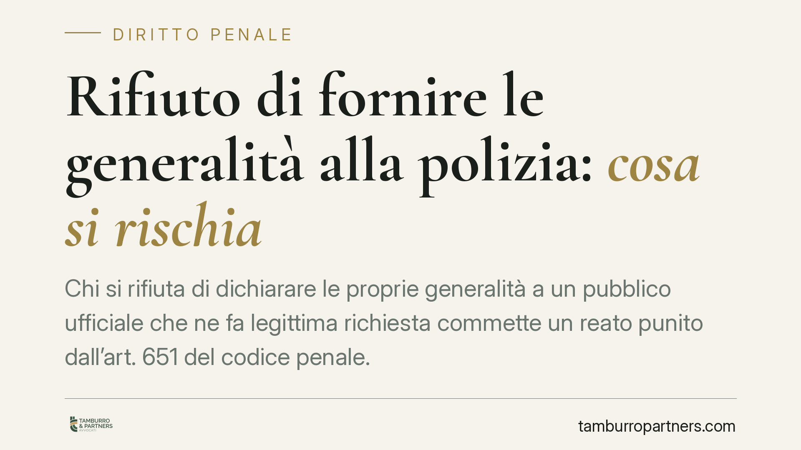

Rifiuto di fornire le generalità alla polizia: cosa si rischia
Chi si rifiuta di dichiarare le proprie generalità a un pubblico ufficiale che ne fa legittima richiesta commette un reato punito dall'art. 651 del codice penale. La questione ricorre spesso durante i controlli di polizia e conviene conoscerne i confini: quando scatta la sanzione, quali sono i limiti dell'obbligo e come comportarsi per non aggravare la propria posizione.

Il caso
Durante un controllo su strada o in un luogo pubblico, un agente di polizia o un carabiniere chiede a una persona di dichiarare le proprie generalità: nome, cognome, data e luogo di nascita, residenza. Il rifiuto non è una semplice scortesia. È una condotta che il codice penale considera reato.
Inquadramento normativo
La norma di riferimento è l'art. 651 del codice penale, rubricato "Rifiuto d'indicazioni sulla propria identità personale". La disposizione punisce con l'arresto fino a un mese o con l'ammenda fino a 206 euro chiunque, richiesto da un pubblico ufficiale nell'esercizio delle sue funzioni, rifiuta di dare indicazioni sulla propria identità personale, sul proprio stato o su altre qualità personali.
Si tratta di una contravvenzione, non di un delitto: la categoria di reati meno grave, punita con l'arresto o l'ammenda anziché con la reclusione o la multa. Il bene tutelato è l'interesse dell'amministrazione a identificare con certezza le persone con cui i suoi funzionari entrano in contatto.
Due precisazioni sono decisive. La prima: la richiesta deve provenire da un pubblico ufficiale nell'esercizio delle funzioni. La seconda: il reato punisce il *rifiuto* di fornire i dati, non il fatto di non avere con sé un documento. Non esiste, nel nostro ordinamento, un obbligo generale di portare con sé la carta d'identità. Chi è sprovvisto di documento ma dichiara oralmente le proprie generalità non commette il reato dell'art. 651.
La Corte di Cassazione ha chiarito che il reato si configura solo quando il rifiuto è netto e ingiustificato. Fornire dati falsi, invece, integra una fattispecie diversa e più grave: quella dell'art. 496 c.p. (false dichiarazioni sull'identità), punita con la reclusione fino a un anno.
Implicazioni pratiche
Per il cittadino comune la distinzione tra le condotte è tutt'altro che teorica. Chi tace o si rifiuta espressamente di dire chi è rischia una contravvenzione. Chi mente sulla propria identità rischia un delitto ben più pesante. Chi semplicemente non ha il documento, ma collabora dichiarando i propri dati, non rischia nulla sotto questo profilo.
Va considerato anche il potere di accompagnamento agli uffici di polizia per l'identificazione, previsto dall'art. 349 del codice di procedura penale. Se la persona non è in grado di provare la propria identità o si rifiuta di farlo, gli agenti possono trattenerla per il tempo strettamente necessario all'identificazione, entro limiti temporali definiti. È un passaggio che conviene evitare con la collaborazione.
Attenzione infine al contesto della richiesta. L'obbligo scatta quando il pubblico ufficiale agisce nell'esercizio delle proprie funzioni e per finalità connesse al suo ruolo. Una richiesta arbitraria o palesemente estranea alle funzioni non genera lo stesso obbligo, ma valutare questa circostanza sul momento è rischioso: il giudizio sulla legittimità della richiesta si fa dopo, non durante il controllo.
Cosa fare in concreto
- Dichiara le tue generalità quando un agente in servizio te le chiede: nome, cognome, data e luogo di nascita, residenza. Basta la dichiarazione orale, il documento non è obbligatorio.
- Non fornire mai dati falsi. Il rischio non è più una contravvenzione ma un delitto, con conseguenze molto più serie.
- Chiedi con calma qualifica e motivo del controllo se hai dubbi sulla legittimità della richiesta, senza opporre rifiuto: le contestazioni si sollevano nelle sedi appropriate.
- Annota data, luogo e circostanze del controllo, ed eventuali testimoni, se ritieni che vi siano state irregolarità.
- Rivolgiti a un legale se ricevi una contestazione ex art. 651 o un provvedimento di accompagnamento: la valutazione del caso concreto è indispensabile.
Riassumendo: collaborare all'identificazione è nel proprio interesse. Il confine tra un episodio irrilevante e un reato passa spesso solo per il modo in cui si risponde a una domanda semplice.
---
Contributo informativo a cura di Tamburro & Partners - Avv. Giuseppe Tamburro. Non costituisce parere legale.
Ogni condominio ha una storia a sé.
Se gestisci un'amministrazione e vuoi un confronto su una specifica questione condominiale, scrivi allo studio. Ti rispondiamo entro un giorno lavorativo.